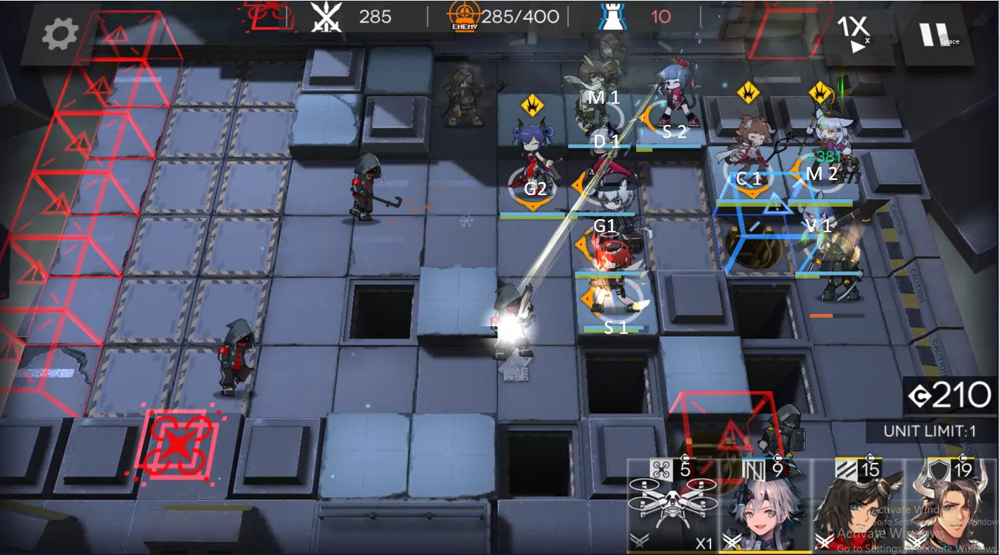

In this guide, I will go through the 3 permanent annihilation stages that are available in Arknights and how to clear each of them. Click on each one of the links to jump to a specific section.
Annihilation is a weekly mode where a total of 400 hostile enemies will spawn in different waves. DP generation will automatically be off, and the amount of orundum is dependent on how many enemies you have eleminated and which map did you play in.
Typically, your team composition should have 2 Casters, 2 Snipers, 2 Defenders, 2 Guards, 2 Vanguards and 2 Medics. You are able to change your members here and there depending on circumstances. For more information about teambuilding, check out my teambuilding guide here.
Additionally, your units should also be at least E1 to continue. Otherwise, it is better to focus on leveling up your operators first.
The map above is the layout of the first annihilation that I will be talking about.
The team composition below is an example that would work. Mayer is just a flexible role here, you can swap her out for another guard.(Not a recommendation, just an example)
Each members will be named after their specialisation. E.g V1 = Vanguard 1 G2 = Guard 2. Here are the abbreviations: V = Vanguard, G = Guard, SU1 = Support SP1 = Specialist, C = Caster, S = Sniper, D = Defender, M = Medic.
Step 1:
Deploy your team according to the picture. By 100-125 enemies killed, you should have gotten these placements on the picture below.
The placement order of your units is as follow:
V1 -> V2 -> S1 -> S2 -> M1 -> D1 -> SU1 -> M2 -> G1
Take note of where the operators are facing.
Step 2:
You can chill for a bit, do something in the meantime, as the next time you're going to be doing anything is when the caster leaders appear at 350 enemies killed. Replace your D1 with D2 as shown below to redirect the fire coming from the leader caster to keep your M2 alive. If you have a spare guard, you can also replace G1 with G2.
Step 3:
Around 370-375 enemies killed, retreat V1 and deploy C1, preferably an AOE Caster. Crownslayer will come, but need not to worry, she will not survive against your team placements
Finale
If all goes well without any hiccups, you will be able to complete this annihilation map with ease.
The map above is the layout of the second annihilation that I will be talking about.
The team composition below is an example that would work. Mayer is just a flexible role here, you can swap her out for another suitable character. Silverash and Ejya is not a neccessity, just makes it a lot easier if u have both. (Not a recommendation, just an example)

Each members will be named after their specialisation. E.g V1 = Vanguard 1 G2 = Guard 2. Here are the abbreviations: V = Vanguard, G = Guard, SU1 = Support SP1 = Specialist, C = Caster, S = Sniper, D = Defender, M = Medic.
Step 1:
Deploy your team according to the picture. By 75-80 enemies killed, you should have gotten these placements on the picture below.
The placement order of your units is as follow:
V1 -> V2 -> G1 -> S1 -> M1 -> C1 -> M2 -> D1 replace V2, S2
Take note of where the operators are facing. (M2 doesnt need to be AOE, you can use a single target medic instead if your front lines cannot sustain enough damage with one medic.)
Step 2:
Once the wraith leaders appear around 260 enemies killed, activate G1 skill , add G2 if do not have enough DPS to deal with them. Retreat G2 when you are done.
Step 3:
At 325 enemies killed, a Hateful Avenger will start to approach your team.(red mask with katana) They deal serious amounts of damage and could potentially wipe out your frontlines if you're not careful. Provide Backup with G2 for G1 to support killing the Hateful Avenger.
Afterwards, when around 340 enemies killed, another Hateful Avenger will come out once again. Activate any necessary skills to take him down.
Step 4:
Another Hateful Avenger will appear at the top right, but will not move until 360-365 enemies killed. Be sure to have your operator's skills up by then, to prevent your team being wiped out.
Step 5:
Around 380 enemies killed, more Hateful Avengers will appear from the middle top lane, so be wary and save any skills available to take them down till then. Two hateful Avengers on your Guards is NO JOKE, they WILL die if not taken care of quickly.
Around 388 enemies killed, the casters will start to push to you, use any medic skills you have to prevent your guards to get killed from multiple hits from the casters.
If G2 dies, immediately put down D2 in their place to fend them off.
Finale
If all goes well without any hiccups, you will be able to complete this annihilation map with ease. (..not for my first time ;-;)
The map above is the layout of the third annihilation that I will be talking about.
The team composition below is an example that would work. Unfortunately, Silverash, Ejya and Ch'en is required for this strategy. Therefore, both of them will be called by theirs names during the guide instead of abbreviations. Everyone is required to be at least E1 L80 this time. Mayer is just a flexible role here, you can swap her out for another guard.(Not a recommendation, just an example)
Each members will be named after their specialisation. E.g V1 = Vanguard 1 G2 = Guard 2. Here are the abbreviations: V = Vanguard, G = Guard, SU1 = Support SP1 = Specialist, C = Caster, S = Sniper, D = Defender, M = Medic.
Step 1:
Deploy your team according to the picture. By 55 enemies killed, you should have gotten these placements on the picture below.
The placement order of your units is as follow:
V1 -> V2 -> S1 -> S2 -> M1 -> M2 -> Silverash -> D1 -> D2(Remove V1)
Take note of where the operators are facing.
Step 2:
When 264 enemies are killed, a couple of Bombtails will appear. Deploy V1 to bait out the bombs.
Step 3:
The 300th enemy is another Bombtail, repeat the same step as Step 2
Step 4:
When 350 enemies have been killed, this stage's difficulty rises up really high. If you did not level your operators high enough or have the proper team composition, you will lose.
Use Ch'en to helidrop onto the Ironclads facing up and use her 2nd skill to reduce a significant portion of their health.
Step 5:
When the first Ironclad reaches to the circle marked in the picture below, activate Silverash's skill to decimate the incoming Ironclads.
Step 6:
Once the top 3 Ironclads are gone, deploy Ch'en at the same spot facing down and activate her skill again.
Step 7:
Whenever possibe replace S2 with Eyja to prepare for the next upcoming waves of IronClads.
Step 8:
A leader IronClad will soon appear. Do not rush and activate all the skills to kill him yet. Wait for more IronClads to join up. Once they're close, deploy Ch'en and use both Ch'en's and Silverash's skills immediately.
Afterwards, replace Eyja with S2.
Finale
If all goes well without any hiccups, you will be able to complete this annihilation map with ease. (This took too many tries for me and drove me insane.)